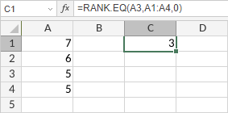

RANK.EQ funkcija
RANK.EQ funkcija je jedna od statističkih funkcija. Koristi se da vrati rang broja u listi brojeva. Rang broja je njegova veličina u odnosu na druge vrednosti u listi (ako biste sortirali listu, rang broja bi bio njegova pozicija). Ako više vrednosti ima isti rang, vraća se najviši rang u toj grupi.
Sintaksa
RANK.EQ(number, ref, [order])
RANK.EQ funkcija ima sledeće argumente:
| Argument | Opis |
|---|---|
| number | Vrednost za koju želite da odredite rang. |
| ref | Izabrani opseg ćelija koji sadrži navedeni number. |
| order | Numerička vrednost koja određuje kako se sortira ref niz. Opcioni argument. Ako je 0 ili izostavljen, funkcija rangira number kao da je ref lista sortirana opadajuće. Bilo koja druga numerička vrednost tretira se kao 1 i funkcija rangira number kao da je ref lista sortirana rastuće. |
Napomene
Kako primeniti RANK.EQ funkciju.
Primeri
Slika ispod prikazuje rezultat koji vraća RANK.EQ funkcija.
